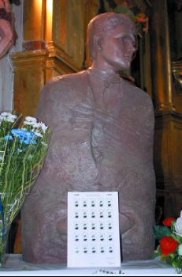

El legado de David Carlos puede comprenderse a partir de varios aspectos.
- La fidelidad: Su principal legado es la fidelidad a su vocación religiosa. Cuando se le ofreció conservar la vida a cambio de abandonar el hábito religioso, no aceptó
- La sencillez: Su vida no estuvo marcada por grandes cargos ni por acciones extraordinarias. Su testimonio se desarrolló mediante tareas sencillas: la huerta, la cocina, la oración y el servicio comunitario.
- El trabajo: David mostró que el servicio cotidiano también podía convertirse en una forma de vivir la vocación religiosa.
- La oración: Desde su infancia estuvo vinculado a la oración, especialmente al Rosario, y durante su vida religiosa mantuvo un profundo espíritu de oración
- El testimonio de fe: Su muerte fue considerada por la Iglesia un testimonio de fidelidad a Cristo y a su vocación
- El legado escolapio: Su historia permanece vinculada al carisma de San José de Calasanz y a las Escuelas Pías, especialmente a Peralta de la Sal.
